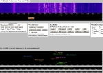
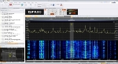
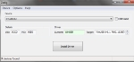
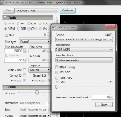
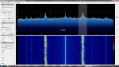
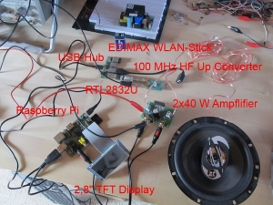
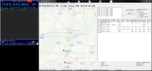
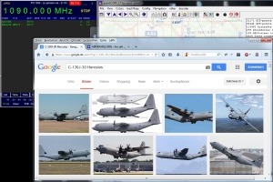

Software Defined Radio (SDR)
Einstieg mit WebSDR | SDR mit DVB-T/DAB USB-Stick (RTL2832U) | Raspberry Pi + RTL-SDR | ADS-B mit RTL-SDR
Bei einem SDR findet die gesamte Signalverarbeitung eines Hochfrequenz-Senders bzw. Empfängers mit Hilfe von Software statt. D.h. die Modulation und Demodulation wird dabei vollständig von der Software übernommen, es können somit auch alle möglichen Betriebsarten realisiert werden. Es existieren auch bereits online-basierte Software Defined Radios wie z.B. das Internet-Portal WebSDR.org.
Einstieg mit WebSDR
 Hier sieht man einen in der Funktechnik typisches Wasserfalldiagramm, das hier in diesem Beispiel einen Teil des 40m-Bands zeigt. Wasserfalldiagramme zeigen Signale unterschiedlicher Stärke (farbliche Hervorhebung) verschiedener Frequenzen (x-Achse) in zeitlicher Abfolge von oben nach unten (y-Achse) an. Über einen Regler (in Form einer gelben Bandpasskurve) lassen sich einfach Frequenz und Bandbreite ändern. Weiter unten sieht man die Zuhörer, entweder mit der IP-Adresse oder mit Rufzeichen.
{kind=link}
Link zum WebSDR: http://rn3dkt.ru/
Software: SDR-RADIO
 SDR-RADIO ist eine Windows-Anwendung für SDR Receivers and Transceivers, es besteht auch die Möglichkeit externe Quellen einzubinden, d.h. es ist kein eigener Receiver notwendig. Natürlich ist der Reiz mit einem eigenen Empfänger viel größer ;-).
{kind=link}
Link zur Software: http://www.sdr-radio.com
SDR mit DVB-T/DAB USB-Stick
Auf Dauer ist natürlich der SDR-Empfang über das Internet unbefriedigend, daher muss ein richtiger SDR-Empfänger her. Da gute Empfänger allerdings ab 200€ aufwärts kosten, zeige ich hier wie man kostengünstig einen DVB-T/DAB USB-Stick als einen vollwertigen SDR nutzen kann, möglich macht dies der Chip RTL2832 mit einem Elonis E4000 oder FC0013 Tuner. Folgende Ausstattung wird benötigt:
Hardware/Software:
- DVB-T/DAB USB-Stick, z.B. Terratec Noxon (ca. 25€)
- PC ab Windows XP
- SDR# und Zadig zur Treiberinstallation
Zuerst muss die Software als ZIP-Archiv heruntergeladen und in ein Verzeichnis eurer Wahl entpackt werden. Als nächstes die "Install.bat" ausführen, das Skript lädt automatisch alle benötigten Dateien herunter. Nun den DAB-USB-Stick anschließen, aber nicht den Treiber von der Hersteller-CD installieren! Wir müssen hier für SDR# einen speziellen Treiber installieren, dazu öffnet ihr zunächst das "sdrsharp" Verzeichnis und startet "Zadig". Im Menü klickt ihr nun auf Options->List All Devices und wählt den von Windows erkannten USB-Stick aus, bei mir hat er die Bezeichnung RTL2832U. Mit einem Klick auf "Install Driver" sollte nach ein paar Minuten die Installion abgeschlossen sein.
{kind=link}
 Die SDR-Software wird nun über "SDRSharp.exe" gestartet. Als nächstes muss nur noch unter "Configure" der Stick mit der Bezeichnung "RTL-SDR / USB" ausgewählt werden.
{kind=link}
 Wenn alles korrekt eingestellt ist, sollte mit einem Klick auf "Play" etwas zu hören sein.
{kind=link}
Um den Kurzwellenbereich hören zu können, ist allerdings noch ein Frequenzkonverter notwendig, der die KW-Frequenzen in den empfangbaren Bereich des DAB-Sticks anhebt.
Raspberry Pi + RTL-SDR
Mit einem Raspberry Pi ist es sogar möglich einen kostengünstigen SDR-Receiver zu bauen. Der folgende Prototyp besteht aus folgenden Komponenten:
- Raspberry Pi Modell B 512 MB
- 2,8" TFT Display und/oder Monitor mit HDMI-Anschluss
- DVB-T/DAB USB-Stick (RTL2832U)
- EDIMAX EW-7811UN Wireless USB Adapter, 150 Mbit/s, IEEE802.11b/g/n
- 100 MHz HF-Up-Converter (für Kurzwellenempfang)
- LogiLink 4-Port Hub USB 2.0
- 2x40 Watt-Endstufe
- Kfz-Lautsprecher
- Teleskop-Antenne (UKW)/KW-Antenne
Hardwareaufbau:
{kind=link}
Folgende Software kommt zum Einsatz:
- Raspbian (Wheezy)
- RTL-SDR (OsmoSDR)
Installation:
Ladet euch zuerst von raspberrypi.org New Out of Box Software (NOOBS) herunter falls ihr noch unerfahren mit dem Raspberry Pi seid, im anderen Fall könnt ihr auch gleich das Raw Image Raspbian herunterladen und über das Tool Win32DiskImager auf eine SD-Karte schreiben. Für die Installation und Konfiguration ist es einfacher den Raspberry Pi an einen Monitor mit HDMI und Tastatur/Maus anzuschließen.
Desktop deaktivieren: Für dieses Projekt ist nicht unbedingt ein Deskop notwendig und verbraucht nur unnötig Arbeitsspeicher. über den Befehl sudo raspi-config könnt ihr die Einstellung enable boot to desktop deaktivieren, nach einem Neustart landet ihr dann direkt in der Konsole.
Als nächstes installieren wir den oben genannten WLAN-Stick, sobald der Stick eingesteckt wurde, sollte er von Raspbian erkannt worden sein, dies kann man einfach mit dem Befehl dmesg überprüfen, hier sollte der Treiber rtl8192cu auftauchen. Mit dem Befehl ifconfig kann geprüft werden, ob der WLAN-Stick als Netzwerkgerät wlan0 auftaucht. Um eine Verbindung mit eurem WLAN-Netzwerk herzustellen, müssen die Zugangsdaten in der Konfigurationsdatei /etc/network/interfaces hinterlegt werden, z.B.
auto lo iface lo inet loopback iface eth0 inet dhcp auto wlan0 allow-hotplug wlan0 iface wlan0 inet dhcp wpa-ap-scan 1 wpa-scan-ssid 1 wpa-ssid "DEIN-WLAN-NAME" wpa-psk "DEIN-WLAN-SCHLÜSSEL"
Damit die Änderungen wirksam werden, muss der Netzwerkdienst neugestartet werden:
sudo service networking restart
Zu guter Letzt müssen wir nur noch die eigentliche Software für den SDR-Empfang installieren. Da es ziemlich mühselig ist, alle Software-Komponenten einzeln zu installieren, hat der amerikanische Student Jacob Zelek ein sehr nützliches Skript geschrieben (Danke!!), dass ihr euch bei GitHub herunterladen könnt, geht dabei wie folgt vor:
git clone https://github.com/jacobzelek/rtl_sdr_kit.git rtl_sdr_kit cd rtl_sdr_kit chmod +x rtl_sdr_kit.sh ./rtl_sdr_kit.sh install
Um eure SDR-Software aktuell zu halten, muss zukünftig nur folgender Befehl aufgerufen werden:
./rtl_sdr_kit.sh update
Nun kann es losgehen! Über das Skript rtl_fm könnt ihr den Tuner auf eine beliebige UKW-Frequenz einstellen, z.B. auf 96,3 MHz:
rtl_fm -f 96.3e6 -W -s 200000 -r 48000 - | aplay -r 48k -f S16_LE
Weitere Informationen findet ihr auf sdr.osmocom.org, nützlich ist auch der Rtl_fm Guide.
|
Der Raspberry Pi bootet: |
UKW-Empfang (HF Up-Converter ist deaktiviert): |
ADS-B mit RTL-SDR
ADS-B steht für Automatic Dependent Surveillance - Broadcast und ist ein System der Flugsicherung zur Anzeige der Flugbewegungen im Luftraum. Der ADS-B Transponder sendet auf 1090 MHz ca. einmal die Sekunde Flugdaten wie Position, Geschwindigkeit, Flugnummer u.v.m.
 Mit einfachsten Mitteln wie einem RTL-SDR, der Software RTL1090 von jetvision.de und adsbSCOPE von sprut ermöglichen das Dekodieren und Anzeigen der Signale am heimischen PC. Hier fliegen zwei Flugzeuge in Richtung Süden:
{kind=link}
 Hier hat mein "Radar" zwei Flugzeuge vom Typ C-130J-30 Hercules der U.S. Air Force erfasst.
{kind=link}